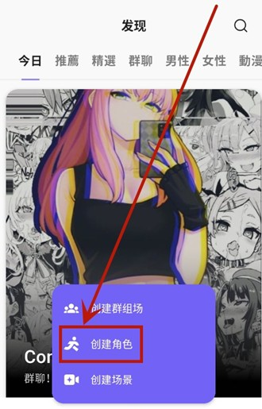

AI 角色扮演赛道这两年我换了五款，最后留下了 Rochat
从 Character AI 到 SillyTavern，从 JanitorAI 到本地模型，角色扮演工具用了一圈后我留在了 Rochat。它有三个别家抄不走的东西，也有几个让人挠头的取舍，这篇给你讲透。
同类工具格局：为什么单独写它
AI 角色扮演这个赛道现在挤得很——海外有 Character AI 稳坐头部，SillyTavern 靠着本地化和扩展性在硬核圈吃香，JanitorAI 走 NSFW 路线吃足流量；国内也有好几款跟风的产品。坦率说，功能层面大家差距在缩小：都支持多模型切换、都有社区角色库、都在往长上下文方向走。
但 Rochat 是少数让我「用了两周就把之前的主力卸掉」的产品——你可以去rochat官网感受一下它的整体调性。不是因为它功能最全，而是它解决了我在其他平台反复撞墙的几个老问题，而且解法很独特。
差异化一：World 模式——离线时故事还在自己跑
这是 Rochat 最魔法的功能，也是它和所有同类产品的决定性差异。
你关掉应用、断网、甚至一周不打开，你创建的 World 里那些 AI 角色还是会继续对话、产生冲突、推动剧情。回来时会给你一个时间跳跃摘要，告诉你"你不在的这几天里发生了什么"——可以续上当前剧情，也可以回溯到某个关键节点重来。
社区里真实案例很多：有人搭了一个贵族家族 World 去旅游两周，回来发现祖父"去世"了、父亲和儿媳因遗产吵架"离家出走"、孙女开始暗中调查死因。另一位用户的末日避难所离线三天，两个角色私奔了、一个叛变去了敌对阵营、剩下的紧急开会还自动加了新的性格标签。你没有安排这些，全是角色根据设定和之前的剧情自己跑出来的。
这不是简单的定时触发脚本能做的事——每个角色要读取完整的 World 历史、自己的设定和之前的互动，然后根据"我是谁 + 之前发生了什么"做出下一步行动，剧情节点还要逐个存档回溯。官方没公开底层实现，但从表现看这块的工程量相当扎实。
冷启动有个门槛：刚创建的 World 不会马上自动演进，得先手动让角色互动至少五到十轮，让 AI 建立 World 的上下文感。之后它才开始自己跑。另外连续三十天没有任何活动的 World 可能会进入休眠，需要手动唤醒一次。长期运行的 World 建议每周至少打开一次，哪怕只看一眼。
差异化二：{char}/{user} 变量——从根上解决身份漂移
AI 角色身份漂移是所有 RP 玩家的噩梦：聊着聊着替你说话、跳视角、忘了自己是谁、用错代词。Character AI 和 SillyTavern 上这个问题尤其高频，我见过的最离谱的案例是一个冷酷剑客聊着聊着突然变成撒娇的小妹妹。
根因其实很简单：大模型天生容易混淆第一第二第三人称。当你在角色设定里写"他是一个剑客"、"你走进了房间"时，AI 无法稳定区分谁是谁。
Rochat 的解法是彻底消除人称代词，用 {char} / {user} 变量。这不是什么新创意，但它是我见过第一个把这套机制做成系统级基础能力的产品——四个字段（性格描述、背景故事、Greeting、Scenario）都用同一套变量体系，官方教程和社区共识也高度统一，去rochat文档翻一下那个变量替换教程就能快速上手。
效果立竿见影。想试试的话从官方下载拿安装包就行，几分钟就能跑起来。我把之前在其他平台写的十几个角色搬过来，把所有"他/她/你/我"替换成 {char} 或 {user} 之后，身份保持度直接上了一个台阶。配合 Scenario 里的官方基础模板（明确 {user} 是玩家、AI 绝对不能替玩家写动作台词），之前最头疼的"抢话"、"替玩家说话"、"视角混乱"这三个问题基本消失了。
不是说换模型没用——Rochat-Character 模型本身就是专门为 RP 优化的，比通用模型的角色扮演稳定性确实好。但变量机制才是真正的基础设施，模型选对了相当于给车换了好发动机，变量机制才是不翻的底盘。
差异化三：社区 fork 机制——好角色可以一键复制迭代
Rochat 的角色分享有三种可见性模式：公开进社区角色库、私有仅自己可见、仅链接可查看。分享时对方可以一键 fork 到自己的角色库——这比手动复制粘贴设定高效太多了。
fork 后的角色是完全独立的副本，修改、对话、收藏量都和原角色无关。原作者不会收到 fork 通知，但可以在排行榜看到被 fork 次数。社区里也形成了一种生态：有人做了精致的角色设成公开，其他玩家 fork 后微调 Scenario 或 Greeting 变成自己的版本，好设定快速扩散。
当然也有原创度的问题——社区对"低原创"标记敏感，几乎不改就 fork 公开容易被标记。部分高级玩家会在 Scenario 里加一行尊重原作者的声明，虽然技术上拦不住，但道德上有约束。

它的取舍：为这些优势付出了什么
说了三个好的，也得说三个让人挠头的地方。
第一，Scenarios 配置对新手不友好。 解决身份漂移的方案在懂行的人手里是特效药，但对刚进来的新人来说，"把所有代词换成 {char}/{user}" 这句话本身就有学习成本。官方教程写得不算差，但 Character AI 那种"写几句描述就能跑"的极简体验在 Rochat 上不存在。你要是不改 Scenario 直接用默认，大概率还是会遇到身份漂移问题。
第二，World 模式的自动演进边界还比较模糊。 离线时间越长跳跃跨度越大、角色越多推进越快、高强度设定的 World 剧情跳跃越剧烈——这些都是社区反馈总结出来的规律，官方没给明确的参数说明。我自己跑过一个六个角色的家族 World，离线一周回来剧情直接跳了三年，有些细节感觉被压缩得太厉害。另外每个 World 目前只有一条主时间线，不支持平行分支。
第三，社区体量还小。 对比 Character AI 上千万的用户和几十万的公开角色库，Rochat 的社区内容量差得远。好消息是增长速度不慢，而且社区氛围比 Character AI 宽松很多，没有那么多敏感词审查——坏消息是你想找特定类型的角色可能得自己动手写。
选购结论：谁该留在 Rochat
如果你的需求是重度 AI 角色扮演——花时间打磨角色设定、在意身份保持度、想跑多人 World 剧情、甚至想打造一个能持续演进的虚拟家族编年史——Rochat 是目前我用过最好的选择，没有之一。World 模式的自动演进 + {char}/{user} 变量的身份保持，这两个组合拳是其他平台暂时抄不走的。
如果你只是偶尔玩一下、不想花时间改 Scenario、就想找个现成角色聊几句——Character AI 的社区体量和极简体验还是更适合你。毕竟"写几句描述就能聊"的门槛，不是每个用户都愿意跨过去的。
如果你是本地化和自定义的重度玩家——SillyTavern 配合本地模型的方案扩展性还是最强的，但搭建门槛和维护成本也是最高的。
我的建议很明确：既然来了，就花半小时把官方教程序列走一遍，把 Scenario 配好、把变量替换干净。做好这两件事，Rochat 的体验会和你第一次打开时完全不一样。这套变量替换教程和角色模板我也同步到了三个仓库，GitHub、Gitee、GitCode 搜同一个项目名就能找到对应目录，国内访问慢时直接换镜像源方便多了。